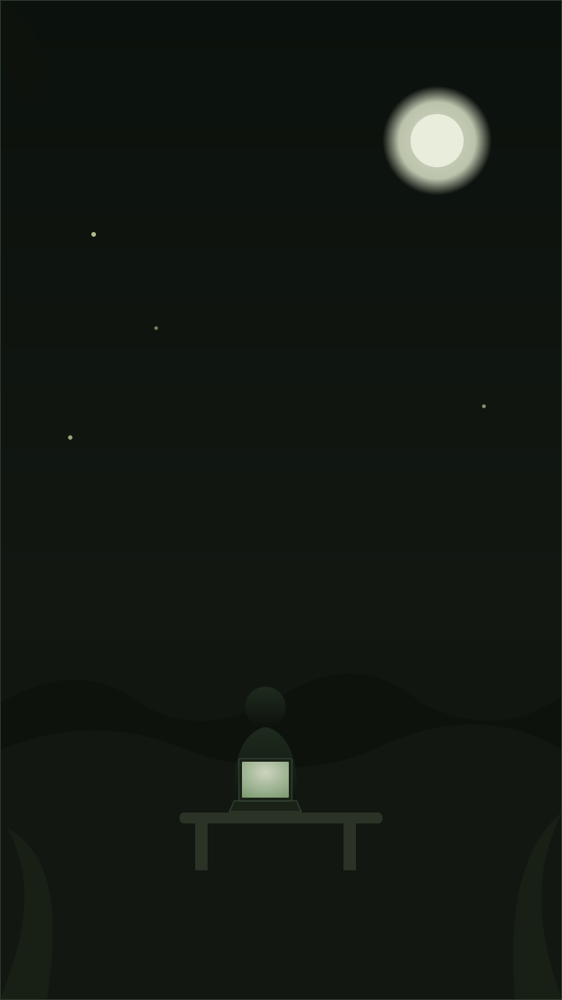
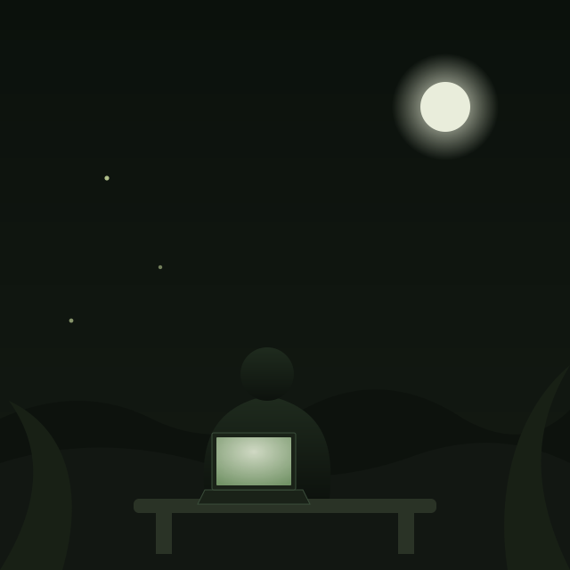

Ruaraidh · ePortfolio · Edinburgh ⇄ Enschede
The Night Garden
A working garden of documents, grown over five weeks of UX fieldwork on the InnerSeed Garden app for InnerSeed Developers. Everything below is planted in the order it was written — start with the video, then walk the beds in sequence: Root, Rise, Return.

Video space reserved · not yet plantedFor five weeks between June and July 2026 I worked as the UX Development placement for InnerSeed Developers, auditing InnerSeed Garden — a breathwork and meditation app — end to end: Preset mode, Builder mode, the settings that hide in plain sight, the empty states nobody had looked at twice. The brief was simple to state and hard to do well. Sit with the app exactly as a first-time user would. Write down what actually happens — the confusion, the small delight, the moment of not knowing what a cog icon does — before letting myself interpret any of it. Only then turn the raw material into something a developer could act on.
That discipline produced forty-nine structured findings, D-01 to D-49, plus five carried over from the very first session, filed week by week and reviewed with InnerSeed's founder, Jeroen, in a running focus call from his studio in Enschede. Some of it was small and immediate — a label missing from a settings cog, a "No favourite tracks yet" message that reads like an error rather than an invitation. Some of it reached further: consolidating three disconnected mode-switchers into one navigation model, tracing a Dutch-language bug across five separate surfaces back to a single cause, and naming a feature the app already had but no one could find — personal Spotify playlist import — as a commercial differentiator no competitor in the category was offering.
What I learned had less to do with any single finding and more with the method underneath all of them. Nielsen's heuristics and Norman's affordances and signifiers are easy to recite and hard to apply under the pressure of a real product, a real founder and a real deadline — you have to hold the theory lightly enough to let the evidence lead, and firmly enough that "I just don't like it" never gets to stand in for a finding. I learned to protect a first impression like evidence, because it is one: you only get to not-know an interface once. And working with Jeroen taught me the harder, more valuable half of the job — translating a usability observation into something a founder with a market to win can actually use, in language that moves budget and attention rather than just describing a screen.
Phase 1 closed formally on 27 June 2026 with the desktop audit complete and three Phase 2 workstreams agreed — a User Testing System, a Brand Book, and a Content Marketing Strategy. That handover is where the rest of this page picks up. Below sit the five weekly Manifestos, already filed in the docs folder and linked in full; the Content Integration Strategy this placement made room for; the Seed Vault, the Garden Lab Proposal, and some honest field notes on what the work actually asked of me; and, at the end, the paper trail — everything this garden grew from.
A note written for this page, not lifted from the manifestos — roughly 500 words, on request.
Rise · Bed One
The Manifestos — five weeks, one growing season
Each plant below is a real document, filed in docs/ at the stage it had
reached when it was written. Click one to read it here, or take a hard copy home — the manifestos speak
for themselves and aren't rewritten on this page.
Rise · Bed Two
The Trellis — the Content Integration Strategy
Agreed with Jeroen as Phase 2's flagship deliverable, structured here in five parts so it reads as one thing from two directions at once: a working document InnerSeed can build from, and a piece of applied marketing strategy a university placement assessor can follow start to finish.
Return · Bed Three
The Seed Vault — what's stored, what's honest, what's next
Supporting material that doesn't belong inside a weekly manifesto but earns its place beside one: ideas parked for later, a proposal for where the work would have gone next, and some unvarnished notes on what five weeks of solo audit work actually asked of me.
Return · The Appendix
Everything This Garden Grew From
The paper trail. A photo instead of a headshot — this placement happened mostly at a laptop, in the evening, and that felt more honest than a suit — plus every path back to a source.

- InnerSeed Garden — the app itself
- The five weekly Manifestos — Bed One, above
- The Content Integration Strategy — Bed Two, above
- The Seed Vault, GLP & Field Notes — Bed Three, above
- Google Drive — the single source of truth (add link)
- LinkedIn (add link)
- Get in touch